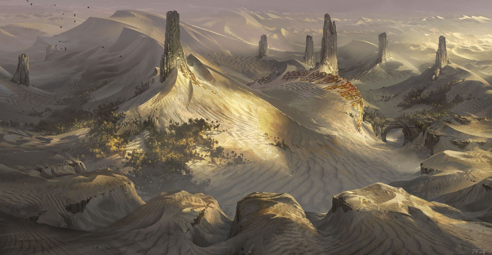
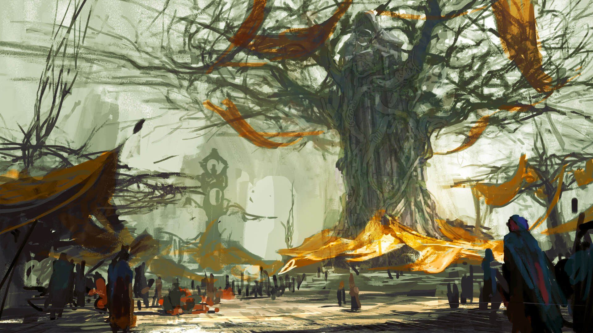
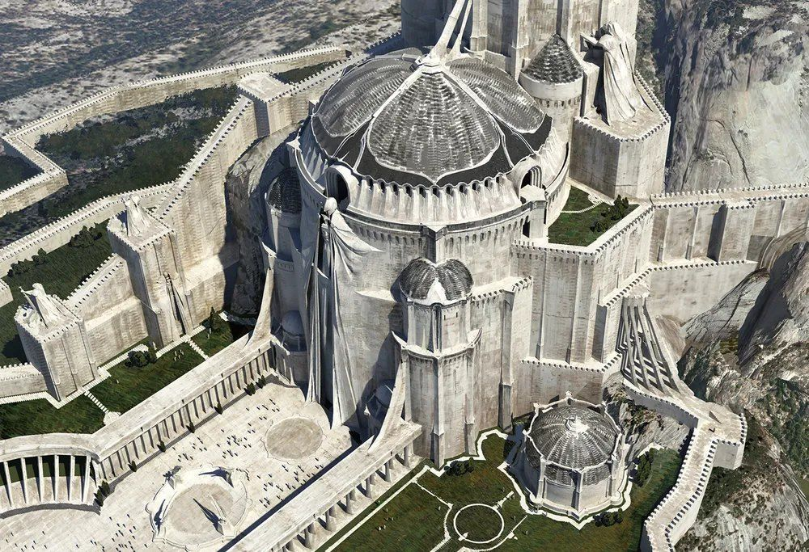
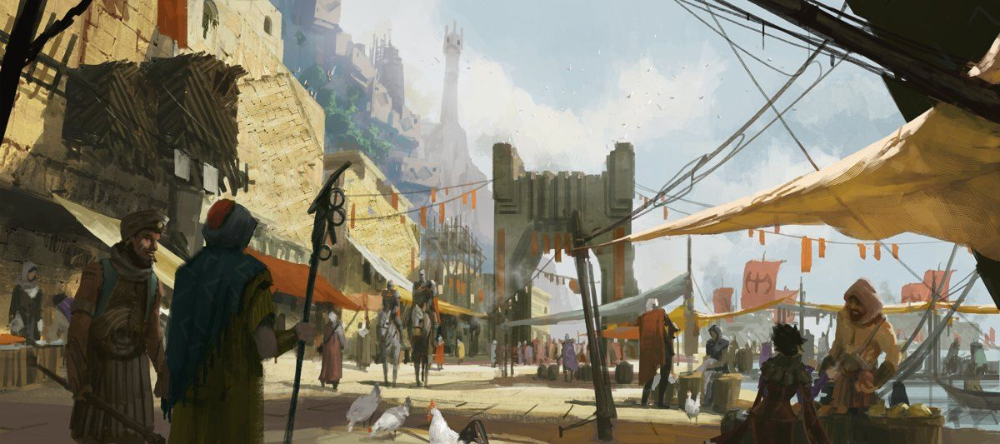
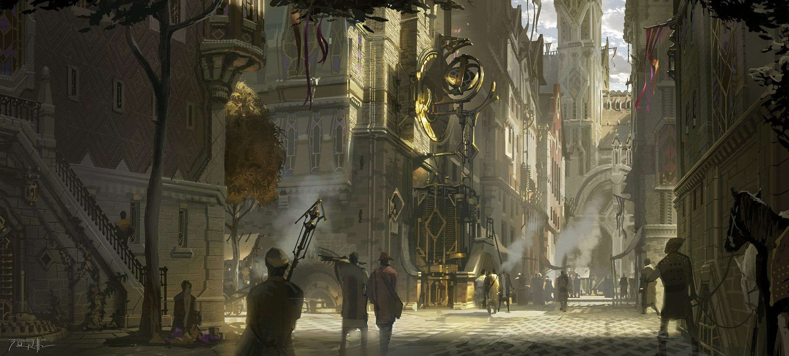
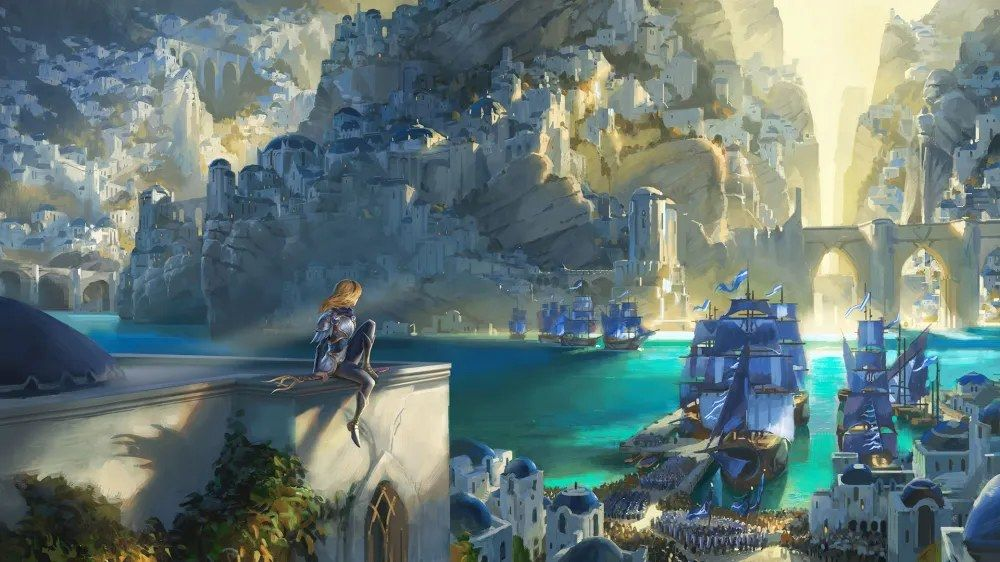
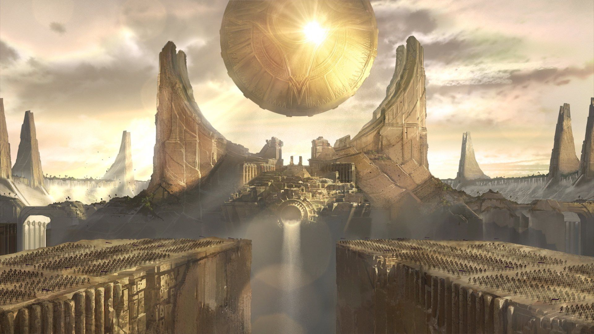

LoL에 머무는 광장과
쉬어 가는 모드를 더한다
숨어 사는 소환사들의 학회가 협곡에서 도시의 운명을 겨룹니다.
한 판 할 이유
승리 → 학회 순위 · 광장 축제 · 챔피언 외형
지친 날도 접속
관전형 · 패치 무관 캐주얼 모드
스킨의 무대
광장 = 꾸밈 상설 무대 · 능력치 영향 0

이미지 출처: Riot Games메마른 한 판
이겨도 져도, 남는 건 LP 하나.
다시 켜기까지, 네 개의 벽
한 판의 피로
30분 집중 · 팀원 갈등
“오늘은 30분 집중할 자신이 없다.”
패치 공부
매 패치 챔피언 · 아이템 변경
“또 바뀌었어? 뭐부터 봐야 하지.”
복귀 격차
바뀐 메타 · 손 감각 차이
“나만 예전 게임을 하고 있다.”
LP뿐인 보상
이겨도 져도 숫자 하나
“30분을 썼는데 남은 게 −23 LP.”
한 판을 하지 않아도
머물 이유가 있는 LoL은 가능할까?
경쟁은 협곡에, 쉼과 기록은 그 바깥에.

이미지 출처: Riot Games탁 트인 쉼터를 세운다
협곡 밖, 소환사가 머무는 세계.
경쟁은 협곡에서,
쉼과 기록은 도시에서
새 게임이 아니라, 협곡 바깥의 시간을 채웁니다.
머무는 광장
큐 대기 · 친구 · 산책
쉬어 가는 캐주얼
짧은 판 · 보기만 해도 OK
흔적이 남는 승부
승리 → 순위 · 풍경 · 외형
| 벽 | 장치 |
|---|---|
| 한 판의 피로 · 갈등 | 관전형 캐주얼 · 머무는 광장 |
| 패치 공부 | 패치 무관 캐주얼 |
| 복귀 격차 | 관찰 · 운 중심 모드 |
| LP뿐인 보상 | 학회 순위 · 광장 · 외형 |
전쟁의 학회가 사라진 뒤,
소환사들은 숨어 살았다
신들처럼 몰래 도시에 섞여 삽니다. 주민은 정체를 모릅니다.
전쟁 대신 전장
분쟁을 협곡 승부로 결정 → 공식 설정에서 삭제
숨은 학회들의 승부
도시별 학회가 협곡에서 겨룸 → 도시의 운명
- 빈자리를 채운다: 초창기 LoL에는 "나라들이 전쟁 대신 정의의 전장에서 분쟁을 결정하고, 소환사가 챔피언을 불러 싸운다"는 설정이 있었습니다. 지금 공식 이야기에서는 빠져 있어서, 협곡에서 왜 싸우는지에 대한 답이 비어 있습니다.
- 숨어 산다 = 공식 설정과 충돌하지 않는다: 소환사는 룬테라 주민에게 정체를 드러내지 않습니다. 그래서 공식 이야기 속 인물과 사건을 하나도 바꾸지 않고 그 옆에 덧붙일 수 있습니다.
- 유저 = 소환사: 플레이어는 원래 "소환사"라고 불립니다. 이 호칭에 몸(광장의 아바타)과 소속(학회)을 붙여 주는 것뿐이라, 새로 배울 설정이 거의 없습니다.
- 이길 이유가 설정에서 나온다: 협곡의 승부가 내가 사는 도시의 분쟁 방향을 정한다는 설정 덕분에, 보상을 덧붙이지 않아도 이길 이유가 생깁니다. 월드컵처럼 직접 뛰지 않는 날에도 "우리 도시의 승부"가 됩니다.
거주 도시 = 학회 = 세력
시즌마다 이사 가능 · 다른 학회 광장은 구경 가능

데마시아 학회
흰 석회암 · 푸른 깃발

녹서스 학회
붉은 깃발 · 데마시아의 맞수

필트오버 학회
황동 · 톱니 · 발명
이미지 출처: Riot Games
고르기
- 시즌 시작 때 한 번 거주 도시를 고릅니다. 고른 도시의 학회원이 되고, 클라이언트 첫 화면이 그 도시의 광장으로 바뀝니다.
- 고르지 않은 유저는 가장 많이 플레이한 챔피언의 출신 지역으로 임시 배정합니다. 첫 접속에서 선택 화면을 한 번 더 보여 줍니다.
옮기기 (이사)
- 시즌 중 이사는 1회만 허용합니다. 이사하면 그때까지 쌓은 기여는 원래 학회에 남고, 새 학회에서는 0부터 쌓습니다.
- 시즌 마지막 2주에는 이사를 막습니다. 이길 것 같은 학회로 몰려가는 것을 막기 위해서입니다.
쏠림 대비
- 학회 순위는 학회원 1인당 평균 기여로 정합니다(세력 시즌 참고). 사람이 많다고 이기지 않으니, 인기 도시로 몰릴 이유가 줄어듭니다.
- 다른 학회 광장은 언제든 구경할 수 있습니다. 소속은 하나지만, 보는 건 자유입니다.
움직이면 3인칭,
내려다보면 탑다운
시점 전환 = 역할 전환
걷기 · 만나기 · 올려다보기
지휘 · 관전
협곡 · 숨바꼭질 · 포로 경주
- 출전: 포탈에 들어서면 카메라가 소환사 등 뒤에서 하늘로 솟아오르고(약 1초), 화면이 위에서 내려다보는 시점으로 바뀌며 기존 로딩 화면으로 이어집니다. "이제 지휘한다"는 신호입니다.
- 귀환: 경기가 끝나면 결과 화면 뒤에 카메라가 내려와 광장의 내 소환사 곁에 붙습니다. "다시 나로 돌아왔다"는 쉼의 신호입니다.
- 왜 이 규칙인가: LoL의 탑다운 시점은 원래 "소환사가 챔피언을 내려다보며 지휘하는 눈"으로 읽을 수 있습니다. 소환사 자신이 움직일 때만 3인칭을 쓰면, 시점만 보고도 지금 내가 무엇을 하는지 알 수 있습니다.
- 1단계는 간단하게: 1단계 광장은 비용을 줄이려고 쿼터뷰(비스듬히 내려다보는 시점) 클릭 이동으로 만들고, 출전 때 카메라가 위로 빠지는 짧은 연출만 넣습니다. 3인칭은 3단계 도시에서 씁니다.

이미지 출처: Riot Games사람이 모이는 항구
1단계 · 학회 광장과 세력 시즌
새 게임이 아니라,
지금 클라이언트 위에
TFT처럼 기존 챔피언 · 스킨 · 클라이언트 위에 새 규칙만 얹습니다.
학회 광장
첫 화면 = 내 도시
세력 시즌
협곡 결과 → 학회 순위
승리 보상
전부 외형 · 능력치 0
캐주얼 모드
아레나처럼 새 모드
첫 화면이 내가 사는 도시의 광장
번호를 누르면 설계가 펼쳐집니다.
쿼터뷰 학회 광장 + 클라이언트 UI
① 내 소환사 ② 큐 버튼 ③ 친구 소환사 ④ 포탈
- 광장을 비스듬히 내려다보는 쿼터뷰에서, 바닥을 클릭하면 내 소환사가 걸어갑니다. 점프·전투·채집 같은 조작은 없습니다. 쉬러 온 공간이라 할 일을 만들지 않습니다.
- 할 수 있는 건 걷기와 감정표현(인사, 박수, 앉기 등)뿐입니다.
- 소환사는 기본 외형으로 시작하고, 의상·장신구·걸음 이펙트 슬롯을 꾸밀 수 있습니다(수익 모델 참고).
- 기술 근거: 작은 캐릭터를 클릭으로 움직이는 방식은 TFT의 전설이가 이미 쓰고 있습니다. 같은 클라이언트 기술을 재사용해 저사양 PC에서도 가볍게 돌아갑니다.
- 큐 버튼은 지금처럼 화면 위쪽에 있습니다. 누르면 화면 위에 대기 타이머가 뜨고, 그대로 광장을 걸어 다닐 수 있습니다.
- 매칭이 잡히면 지금과 같은 수락 창이 뜹니다. 광장 어디에 있든 바로 수락할 수 있고, 수락하면 내 소환사 옆에 포탈이 열립니다(④).
- 큐를 돌리지 않아도 광장에 머물 수 있습니다. 친구를 기다리거나, 캐주얼 모드만 하다 가도 됩니다.
- 왜: 매칭 대기는 LoL에서 가장 할 일이 없는 시간입니다. 그 시간을 광장 산책으로 바꾸면, 기능을 추가하지 않고도 체감 대기가 짧아집니다.
- 광장에는 온라인 친구의 소환사와, 같은 학회원 중 무작위 일부(예시 최대 20명)가 보입니다. 한 화면에 보이는 인원을 제한해 서버와 PC 부담을 낮춥니다.
- 친구 소환사를 클릭하면 파티 초대 · 프로필 · 관전 메뉴가 뜹니다. 지금 친구 목록에서 하던 일을 광장에서 그대로 합니다.
- 게임 중인 친구는 광장에 서 있지 않고, 머리 위에 「출전 중」 깃발만 남습니다.
- 모르는 학회원과는 채팅이 없고 감정표현만 됩니다. 광장이 또 하나의 갈등 공간이 되지 않게 하기 위해서입니다.
- 수락하면 내 소환사 옆에 포탈이 열리고, 소환사가 걸어 들어가며 카메라가 위로 빠집니다(시점 규칙 참고). 그 뒤는 지금의 챔피언 선택 · 로딩 화면 그대로입니다.
- 경기가 끝나면 결과 화면 뒤에 광장으로 돌아옵니다. 이긴 날은 학회 기여가 쌓이는 연출을, 진 날도 참여분이 쌓이는 연출을 짧게 보여 줍니다.
- 광장 끄기: 설정에서 광장을 끄면 지금의 메뉴 화면으로 돌아갑니다. 바로 큐만 잡고 싶은 유저의 길은 그대로 둡니다.
협곡의 결과가 학회의 이야기로
결말은 유저의 승부가 씁니다.
시즌 갈등
녹서스 vs 데마시아
협곡 플레이
승리 ↑ · 패배도 참여분
주간 정산
순위 · 광장 장식 변경
시즌 종료
축제 or 재정비
한 판의 기여 (예시 수치)
| 결과 | 랭크 | 일반 · 칼바람 등 | 캐주얼 모드 |
|---|---|---|---|
| 승리 | 10 | 7 | 참여 2 |
| 패배 | 3 | 2 | 참여 2 |
| 탈주 · 자리 비움 | 0 | 0 | 0 |
- 이기면 크게, 져도 조금: 패배도 참여분이 쌓여 허무하지 않지만, 승리와의 차이가 커서 이길 이유는 분명합니다.
- 캐주얼은 참여분만: 경쟁하지 않는 유저도 학회 이야기에 이름을 남기되, 순위를 크게 흔들지는 못하게 합니다.
- 한 팀에 학회가 섞여도 괜찮다: 매칭은 지금과 같고, 이기면 각자 자기 학회에 기여합니다. 그래서 팀원끼리 이해관계가 완전히 같습니다.
순위 정하기
- 학회 순위 = 학회원 1인당 평균 기여. 사람이 많은 학회가 숫자로 이기지 않습니다.
- 평균은 그 주에 한 판 이상 플레이한 학회원만으로 계산합니다. 접속하지 않는 학회원이 평균을 깎지 않게 하기 위해서입니다.
- 1인 하루 상한: 하루 기여는 예시로 10판분까지만 셉니다. 시간이 많은 소수가 학회 순위를 좌우하지 않게 하고, 과몰입도 막습니다.
어뷰징 막기
- 고의 패배는 승리보다 항상 손해라 할 이유가 없습니다. 탈주·자리 비움은 0점이고, 신고가 확정된 판은 기여를 되돌립니다.
- 시즌 마지막 2주에는 이사를 막아, 이기는 학회로 몰려가는 것을 막습니다.
- 시즌 시작: 광장 소식판에 이번 시즌의 사건이 올라옵니다. 예: "녹서스 군대가 데마시아 국경 요새로 진군한다."
- 매주: 정산 결과가 소식판에 전황으로 실립니다. 순위가 광장 장식에 반영됩니다(순위별 광장 참고).
- 시즌 종료: 1위 학회의 도시에는 축제가, 낮은 순위 도시에는 재정비 이야기가 열립니다. 어느 세력도 멸망하지 않고, 결과가 다음 시즌 사건의 출발점이 됩니다.
- 기존 RPG와의 차이: 개발자가 정한 결말을 따라가는 것이 아니라, 유저들의 승부 결과로 이야기 방향이 정해집니다. 기존 기획서의 시즌 서사 시스템을 그대로 이어받습니다.
순위가 광장의 분위기를 바꾼다
모든 순위가 밝게 · 주간 정산마다 한 칸씩
축제
꽃가루 · 깃발 · 음악
활기찬 일상
장터 · 붐비는 광장
재정비
비계 · 「다음엔 우리 차례」
- 같은 광장, 다른 장식: 광장 구조는 그대로 두고 장식 세트(깃발, 조명, 노점, 비계, 현수막, 배경음)만 바꿉니다. 새 맵을 만드는 게 아니라 비용이 낮습니다.
- 한 주에 한 칸: 각 분위기 사이를 단계로 나누고, 주간 정산마다 한 칸씩만 움직입니다. 순위가 크게 뒤집혀도 광장이 하루아침에 바뀌지 않아 자연스럽고, 매주 "조금 달라졌다"는 변화가 보입니다.
- 낮은 순위도 밝게: 꼴찌 광장이 쓸쓸하면 그 학회원은 클라이언트를 켤 때마다 기분이 나빠집니다. 그래서 재정비는 "진 도시"가 아니라 "준비 중인 도시"로 그립니다. 비계가 하나씩 걷히는 모습이 곧 다음 판을 할 이유가 됩니다.
- 다른 학회 광장 구경: 축제 중인 상대 학회 광장에 놀러 가 볼 수 있어, 이기고 싶은 마음이 생깁니다.
이긴 학회는 협곡에서 보인다
전부 외형 · 능력치 0 · 상대 9명이 봅니다.
협곡 화면 위 ① 챔피언 효과 ② 귀환 ③ 우물 표시
- 누가: 지난 시즌 1위 학회의 학회원 중, 시즌 동안 최소 참여(예시 20판)를 채운 소환사.
- 어떤 챔피언: 공식 설정의 출신 지역이 그 도시인 챔피언. 예: 데마시아가 이기면 가렌, 럭스 등.
- 무엇이: 지금 낀 스킨 위에 학회 색의 오라·테두리 효과가 얹힙니다. 스킨을 대체하지 않아 기존 스킨 판매와 부딪히지 않습니다. 시즌 대표 챔피언에는 한정 특수 스킨을 줍니다.
- 얼마나: 다음 시즌 동안 유지됩니다. 다음 시즌에 다시 이겨야 이어집니다.
- 승리 학회의 학회원은 모든 챔피언으로 귀환할 때 바닥에 학회 문양이 빛납니다.
- 귀환 시간과 판정은 그대로입니다. 보이는 모습만 바뀝니다.
- 승리 학회의 학회원이 부활하거나 귀환할 때, 우물 옆에 학회 깃발과 병사들이 나타나 환호합니다.
- 한 팀에 여러 학회가 섞여 있으므로 우물 전체를 바꾸지 않고, 그 소환사 개인의 연출로만 보여 줍니다.
- 회복량·속도 등 우물의 기능은 그대로입니다.
- 공정성: 시즌에서 진 학회가 협곡에서까지 불리해지면, 지는 쪽이 계속 지는 악순환이 생깁니다.
- 보여야 동기가 된다: 외형은 상대 9명이 모두 봅니다. "저 학회 이번에 이겼구나"가 경기 중에 드러나고, 다음 시즌에 이기고 싶은 이유가 됩니다.
- 진 학회도 빈손은 아니다: 시즌 참여 기념 아이콘 테두리를 받습니다. 승리 보상보다 훨씬 작게 둬서 이길 이유는 지킵니다.
- LoL과 같은 방향: LoL은 능력치가 아닌 외형으로 수익을 냅니다. 보상도 같은 원칙을 따릅니다.
포로의 고향에서 쉬어 간다
경쟁 없는 놀이, 그리고 한 소환사의 하루
아레나처럼 새 모드로,
네 가지만 지킨다
경쟁은 내려놓고, 쉬면서 즐깁니다.
실력보다 관찰과 운
손 빠르기 X · 눈치 O
패치 무관
이동 + 버튼 1개 · 공부 0
3~5분 짧은 판
중간 참여 · 진 쪽도 보상
관객이 더 안다
전체 시야 → 보기만 해도 긴장
- 피로 → 3~5분짜리 판, 보기만 해도 되는 관전형. 30분 집중할 여력이 없는 날에도 들어올 수 있습니다.
- 패치 공부 → 챔피언 스킬 대신 이동과 버튼 하나. 패치가 바뀌어도 규칙은 그대로라 배울 것이 없습니다.
- 복귀 격차 → 승패를 손 빠르기가 아니라 관찰과 운이 가릅니다. 석 달 쉬고 온 유저도 첫 판부터 대등합니다. 여기서 감을 되찾고 일반전 → 랭크로 돌아가는 계단이 됩니다.
- 팀원 갈등 → 판이 짧고, 진 쪽도 참여 보상을 받고, 개인 실수가 결과를 좌우하지 않아 탓할 거리가 줄어듭니다.
- 개발 범위: 아레나처럼 기존 큐에 모드 하나를 더하는 방식입니다. 맵 엔진·챔피언·부쉬·와드 시스템을 재사용합니다.
부쉬 숨바꼭질
관객만 아는 긴장. LoL의 부쉬 · 와드 · 시야를 그대로 씁니다.
부쉬 · 술래 · 숨은 포로
(시야 제한)
(전체 시야)
| 단계 | 시간 | 일어나는 일 |
|---|---|---|
| 준비 | 15초 | 역할 공개, 숨는 쪽은 변신할 모습 선택 |
| 숨기 | 30초 | 숨는 쪽만 이동. 술래는 화면이 가려진 채 대기 |
| 수색 | 3분 | 술래가 찾기 시작. 부쉬가 1분마다 시듦 |
| 결과 | 10초 | 승패, 생존 시간, 예측 결과 공개 → 광장 귀환 |
- 숨는 쪽 8명: 포로, 미니언, 정글 몹 중 하나로 변신합니다. 맵에는 같은 모습의 NPC 무리가 돌아다녀서 그 사이에 섞일 수 있습니다. 조작은 우클릭 이동 + 변신 버튼(다른 모습으로 바꾸기, 쿨타임 20초).
- 술래 2명: 우클릭 이동 + 와드 버튼(설치한 자리 주변을 밝힘, 최대 3개). 밝혀진 범위 안의 대상을 클릭하면 잡습니다.
- 잘못 잡으면: NPC를 클릭하면 술래가 2초 동안 멈춥니다. 아무거나 누르는 것을 막습니다.
- 챔피언 스킬은 쓰지 않습니다. 패치가 바뀌어도 규칙은 그대로입니다.
- 협곡보다 넓은 전용 맵에 부쉬를 많이 깝니다. 처음에는 숨을 곳이 넉넉합니다.
- 수색이 시작되면 1분마다 부쉬 일부(예시 25%)가 시듭니다. 어떤 부쉬가 시들지는 10초 전에 노랗게 예고합니다.
- 시간이 갈수록 숨을 곳이 줄어 마지막 1분에 긴장이 가장 높아집니다. 맵만 넓으면 술래가 헤매다 지루해지고, 부쉬만 많으면 운으로 끝나는 문제를 막습니다.
- 3분 동안 한 명이라도 살아남으면 숨는 쪽 승리, 모두 잡으면 술래 승리.
- 잡힌 사람은 바로 관전자가 되어 전체 시야로 남은 판을 보고, 생존 예측에 참여합니다. 탈락해도 할 일이 있습니다.
- 보상은 참여분 + 생존 시간. 이긴 쪽은 조금 더 받지만, 진 쪽도 빈손이 아닙니다. 학회 기여는 참여분만 쌓입니다(기여 계산 참고).
- 관전자(잡힌 사람, 친구 관전, 광장 관람)에게는 숨은 사람이 전부 보입니다. 술래가 바로 옆 부쉬를 지나칠 때 관객만 아는 긴장이 생깁니다. 영화의 서스펜스와 같은 원리입니다.
- 관전자는 "누가 끝까지 살아남을까"를 무료 포인트로 예측합니다(포로 경주와 같은 포인트).
- 관전자의 채팅·핑은 플레이어에게 보이지 않습니다. 관객이 답을 알려 주는 것을 막습니다.
포로 경주: 응원만 해도 한 판
협곡이 부담스러운 날의 쉼표
이미지 출처: Riot Games · 관전 화면 목업은 추후 교체
- 포로 8마리가 트랙을 자동으로 달립니다(예시 90초). 유저는 아무것도 조작하지 않습니다.
- 코스 중간에 눈덩이, 지름길, 미끄러운 얼음 같은 무작위 이벤트가 일어나 결과를 예측하기 어렵게 만듭니다. 매번 순위가 뒤집힐 여지가 있어 끝까지 보게 됩니다.
- 광장 한쪽의 트랙에서 정해진 간격(예시 10분마다)으로 열립니다. 큐를 돌리면서도 볼 수 있습니다.
- 경주 전 1등 포로를 예측 포인트로 고릅니다. 포인트는 매일 무료로 받고, 돈으로 살 수 없으며 현금으로 바꿀 수도 없습니다.
- 모은 포인트는 광장 꾸밈(감정표현, 장신구 등) 교환에만 씁니다. 사행성 논란이 생길 구조를 처음부터 만들지 않습니다.
- 맞히면 보너스, 틀려도 참여분이 쌓입니다. 진 사람이 없는 구조입니다.
- 응원 버튼을 누르면 트랙 옆 관중석에 내 소환사의 응원 연출이 뜹니다. 같은 포로를 응원하는 사람이 많을수록 관중석이 들썩입니다.
- 응원은 연출만 있고 결과에는 영향이 없습니다. 많이 누른 쪽이 이기면 공정하지 않기 때문입니다.
석 달 만에 돌아온 소환사

이미지 출처: Riot Games다시 떠오르는 태양
작게 시작해 넓히는 길, 그리고 실행
작게 시작해, 증명하며 넓힌다
앞 단계 지표가 좋아야 다음 단계로 갑니다.
클라이언트 광장
학회 광장 · 순위 변화 · 캐주얼
광장 확장
경기 같이 보기 · 숨은 소환사 찾기
룬테라 여행
3인칭 도시 · 포탈 여행
1단계 → 2단계
- 광장을 켠 그룹이 끈 그룹보다 주간 판 수, 패배 후 바로 종료 비율, 복귀 유저 재이탈 중 둘 이상에서 나아질 것.
- 광장을 스스로 끄는 비율이 낮을 것. 높으면 광장이 방해가 된다는 뜻이라 먼저 고칩니다.
2단계 → 3단계
- 협곡을 하지 않고 광장·캐주얼만 이용한 접속이 꾸준히 생길 것. "머물 이유"가 증명된 상태입니다.
- 소환사 꾸밈 판매가 2단계 개발 비용을 회수할 흐름을 보일 것.
2단계에 더하는 것
- 경기 같이 보기: 광장 대형 스크린에서 리그 경기를 함께 보고, 포인트로 승부를 예측합니다.
- 숨은 소환사 찾기: 광장 곳곳에 숨은 챔피언 코스튬 NPC를 찾아 도감을 채웁니다. 큐 중에 떠나도 기록이 남습니다.
1단계에 만든 것은 버려지지 않는다
1단계 비용 = 다음 단계의 기반
처음부터 함께한 소환사가 넓은 세상으로
스킨에게, 보여 줄 무대를
지금 스킨은 한 판 동안 9명만 봅니다 → 광장 = 상설 무대
소환사 꾸미기
의상 · 장신구 · 걸음 이펙트
광장 감정표현
몸짓 · 포즈
학회 테마 의상
학회 색 · 문양
- 새 슬롯: 소환사는 챔피언과 별개의 꾸밈 슬롯입니다. 기존 챔피언 스킨과 겹치지 않아 매출을 나눠 먹지 않고 더해집니다.
- 상점 단품: 의상, 장신구, 걸음 이펙트, 감정표현을 단품으로 팝니다. TFT 전설이 상점과 같은 방식입니다.
- 시즌 한정 학회 의상: 시즌마다 학회 색·문양을 담은 의상을 한정 판매합니다. 승리 보상(협곡 외형)과는 별개입니다.
- 무료로도 얻는다: 시즌 참여, 포로 경주 포인트 교환으로 기본 꾸밈을 얻을 수 있습니다. 돈을 쓰지 않는 유저도 광장에서 초라하지 않게 합니다.
- 팔지 않는 것: 학회 기여, 순위, 협곡 능력치, 예측 포인트. 경쟁과 결과에 닿는 것은 팔지 않습니다.
무엇이 좋아지는지, 이렇게 확인한다
수치는 가정하지 않습니다 · 단계마다 측정
| 지표 | 가설 | 비교 |
|---|---|---|
| 주간 판 수 | 흔적이 남으면 한 판 더 | 학회 소속 전후 |
| 패배 후 종료 | 남는 게 있으면 안 끈다 | 도입 전후 |
| 복귀 재이탈 | 감을 되찾으면 덜 떠난다 | 캐주얼 경험 유무 |
| 협곡 없는 접속 | 안 해도 들른다 | 광장 · 캐주얼 접속 |
| 끝까지 하는 판 | 이길 이유 → 항복 감소 | 항복 투표율 |
- 나눠서 연다: 1단계는 일부 서버·일부 계정에 먼저 열고, 같은 기간의 나머지 그룹과 비교합니다. 패치나 이벤트 같은 다른 변수의 영향을 줄입니다.
- 기간: 시즌 효과를 보려면 최소 한 시즌(정산 여러 번)을 지켜봅니다. 첫 주의 신기함만 보고 판단하지 않습니다.
- 복귀 유저 따로 보기: 일정 기간 접속하지 않았다 돌아온 유저만 묶어, 캐주얼을 먼저 한 그룹과 바로 협곡으로 간 그룹의 재이탈을 비교합니다.
- 부작용도 본다: 광장을 끄는 비율, 신고율, 랭크 매칭 시간이 나빠지지 않는지 함께 봅니다.
먼저 묻게 될 질문에, 먼저 답한다
| 우려 | 대응 |
|---|---|
| 개발 비용 | 기존 클라이언트 · 챔피언 재사용 |
| 저사양 PC | 쿼터뷰 · 선택형 · 바로 큐 유지 |
| 경쟁 공정성 | 보상은 외형뿐 |
| 협곡 시간 잠식 | 대기 시간 활용 · 복귀 유입 |
| 학회 쏠림 | 1인당 평균 기여로 순위 |
| 학회 간 대립 | 한 팀에 여러 학회 → 승리는 모두의 이득 |
경기로 끝나던 LoL에서, 머무는 LoL로
| 기존 LoL | 본 기획 | |
|---|---|---|
| 한 판의 결과 | LP 숫자 | 학회 순위 · 광장 · 외형 |
| 협곡 밖 | 메뉴 화면 | 친구가 있는 학회 광장 |
| 지친 날 | 접속 이유 없음 | 보기만 해도 되는 모드 |
| 복귀 | 실력 격차의 벽 | 캐주얼로 감 되찾기 |
| 세계관 | 읽는 이야기 | 직접 겪는 이야기 |
한 판의 승부가,
내가 사는 도시의 풍경이 된다.
유운식 · 게임 기획